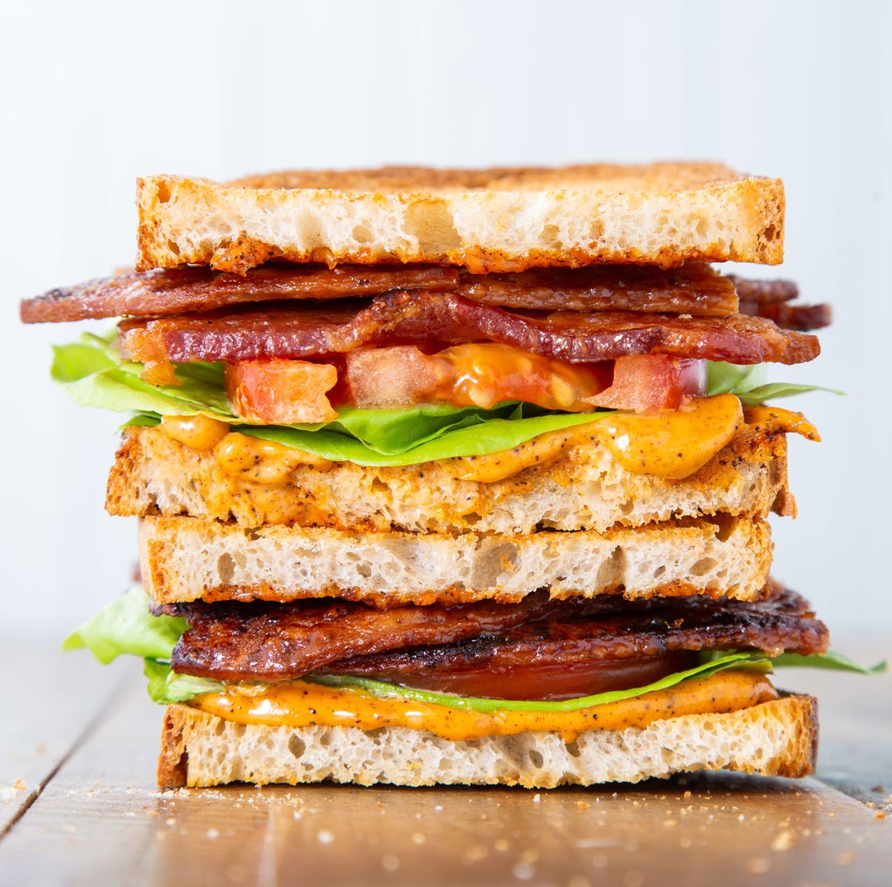

<h1>BLT Recipe</h1>

<h4>How to make a delicious BLT.</h4>
<p>First you must acquire bread. This allows you to create the basis for the BLT</p>
<ul>
    <li>Bread</li>
    <li>Bacon</li>
    <li>Lettuce</li>
    <li>Tomato</li>
</ul>
<h4>Steps</h4>
<ol>
    <li>Place bacon lettuce on bread</li>
    <li>Place tomato ontop of lettuce</li>
    <li>Place bacon ontop of tomato</li>
</ol>